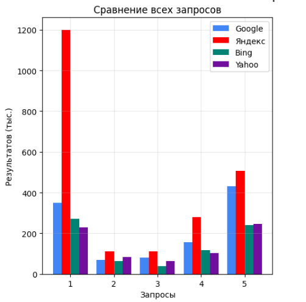
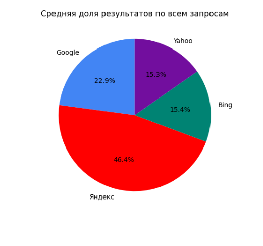
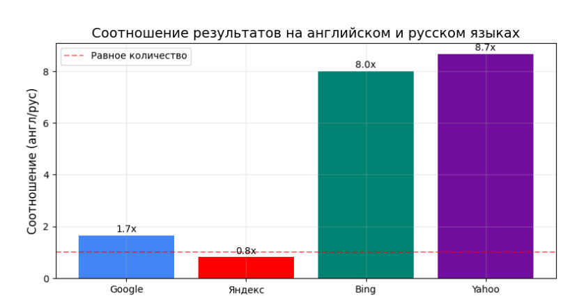
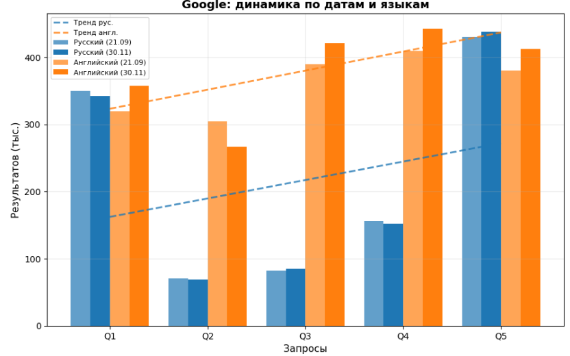
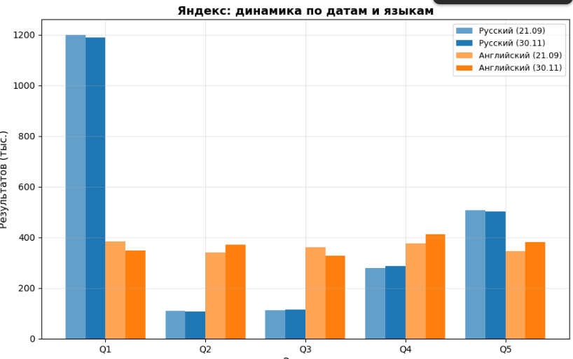
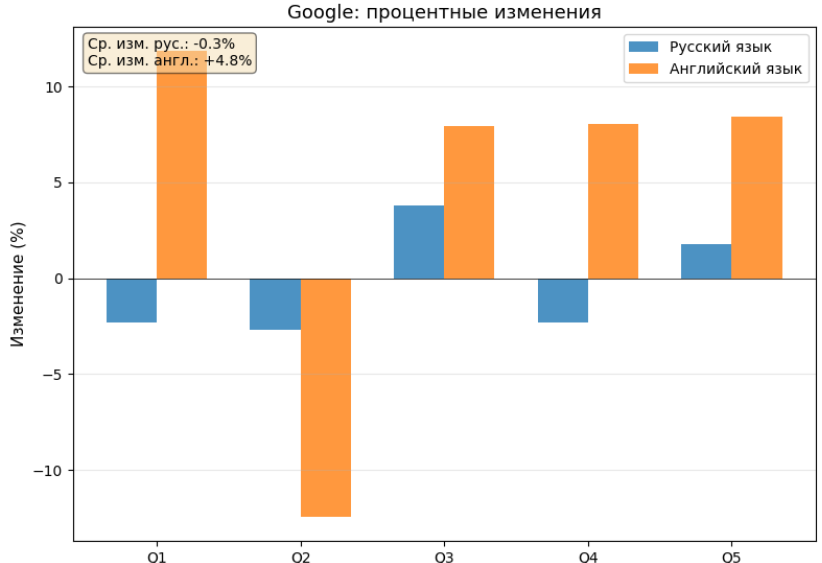
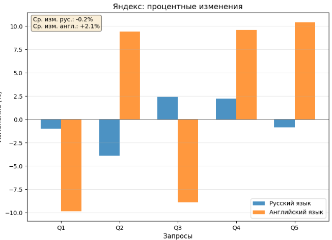
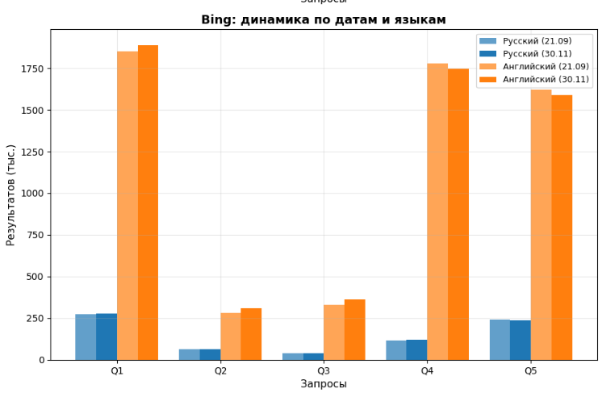
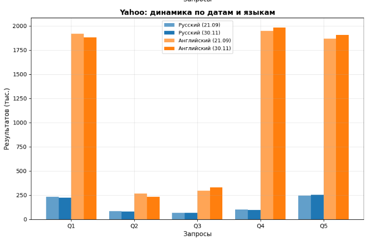

Отчет об информационном поиске
Представленный отчет позволяет оценить информационную ситуацию по теме магистерской работы. Он является основным документальным подтверждением глубины и полноты информационного поиска, а также служит для фиксации текущей ситуации в исследуемой области.
Поиск выполнен с использованием четырех поисковых систем (Google, Яндекс, Bing, Yahoo). Результаты сведены в таблицу. Всего произведено 10 запросов, имеющих отношение к магистерской работе. Из них два запроса соответствует названию магистерской работы на двух языках, два запроса с ФИО руководителя, а также шесть запросов с ключевыми понятиями по теме магистерской работы.
Ниже приведены четыре таблицы (2 временных промежутка на 2-х языках) с отчетами о поиске, которые разделяет временной промежуток в месяц, а также диаграммы, которые позволяют сравнить основные изменения, произошедшие за этот период.
Отчет о поиске за 21.09.2025 г.
| На русском языке | ||||
| Система контекстно-зависимого обнаружения и коррекции орфографических ошибок на основе языковых моделей | ~350 000 | ~1.2 млн | ~272 500 | ~230 200 |
| Добровольская Наталья Юрьевна, КУБГУ | ~70 800 | ~110 500 | ~62 700 | ~84 650 |
| Способы контекстно-зависимого обнаружения ошибок | ~82 000 | ~112 000 | ~40 000 | ~65 300 |
| Понятия языковых моделей | ~156 000 | ~280 000 | ~116 000 | 102 000 |
| Методы автоматизации обнаружения ошибок в тексте | ~430 000 | ~506 000 | ~241 000 | ~245 500 |
| На английском языке | ||||
| Context-aware system for detection and correction of spelling errors based on language models | ~320 000 | ~385 000 | ~1 850 000 | ~1 920 000 |
| Natalya Yuryevna Dobrovolskaya, Kuban State University | ~305 000 | ~340 000 | ~280 000 | ~265 000 |
| Methods of context-aware error detection | ~390 000 | ~360 000 | ~330 000 | ~295 000 |
| Concepts of language models | ~410 000 | ~375 000 | ~1 780 000 | ~1 950 000 |
| Methods for automating text error detection | ~380 000 | ~345 000 | ~1 620 000 | ~1 870 000 |
Отчет о поиске за 30.11.2025 г.
| На русском языке | ||||
| Система контекстно-зависимого обнаружения и коррекции орфографических ошибок на основе языковых моделей | ~342 000 | ~1 188 000 | ~278 300 | ~221 500 |
| Добровольская Наталья Юрьевна, КУБГУ | ~68 900 | ~106 200 | ~64 100 | ~81 400 |
| Способы контекстно-зависимого обнаружения ошибок | ~85 100 | ~114 700 | ~38 200 | ~67 900 |
| Понятия языковых моделей | ~152 400 | ~286 300 | ~119 800 | ~98 100 |
| Методы автоматизации обнаружения ошибок в тексте | ~437 600 | ~501 800 | ~235 400 | ~251 200 |
| На английском языке | ||||
| Context-aware system for detection and correction of spelling errors based on language models | ~358 000 | ~347 000 | ~1 889 000 | ~1 882 000 |
| Natalya Yuryevna Dobrovolskaya, Kuban State University | ~267 000 | ~372 000 | ~311 000 | ~233 000 |
| Methods of context-aware error detection | ~421 000 | ~328 000 | ~364 000 | ~331 000 |
| Concepts of language models | ~443 000 | ~411 000 | ~1 748 000 | ~1 984 000 |
| Methods for automating text error detection | ~412 000 | ~381 000 | ~1 589 000 | ~1 906 000 |
Анализ результатов
На русском языке: лидером по количеству найденных материалов является Яндекс. Google даёт более сбалансированные, но меньшие цифры.Bing и Yahoo отстают по объёму индексации русскоязычного контента.
На английском языке: Bing и Yahoo значительно превосходит остальные системы. Yandex выдаёт наименьшие значения.
Также можно заметить, что непосредственно равномерность освещения вопросов, связанных с темой работы, в различных языковых пространствах - разная. Русскоязычные ресурсы по IT-безопасности и DevOps-технологиям представлены заметно слабее.
По моему мнению, можно выделить следующие аномалии и недостатки:
- Яндекс иногда показывает чрезмерно высокие цифры (ровно 1 000 000 по разным запросам);
- Bing и Yahoo даёт чрезвычайно большие значения по англоязычным запросам, что вызывает сомнения в информативности найденных сайтов;
- Yandex на английском языке даёт низкие значения, что говорит о его недостаточной базе знаний;
- Yandex показывает количество найденных источников только в установленном браузере.
Сравнивая результаты запросов по различным поисковым системам, можно прийти к выводу, что наилучшие результаты все же показала система Яндекс на русском языке и система google на английском. Во всех случаях было найдено достаточное количество документов на всех языках.
При сравнении и анализе результатов в отчетах о поиске, которые разделяют полтора месяца, необходимо отметить, что количество результатов поо запросам в системах как снизилось так и повысилось, что можно списать на аномалии.
Подтверждая выше сказанный текст были созданы графики сравнения результатов поисковых систем и динамики изменения количества результатов для каждого поисковика отдельно на разных языках:








